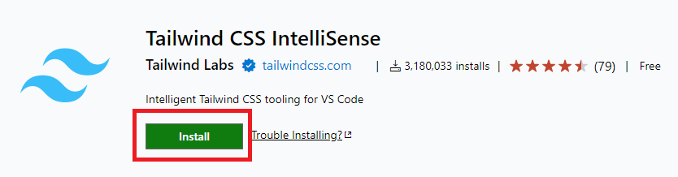
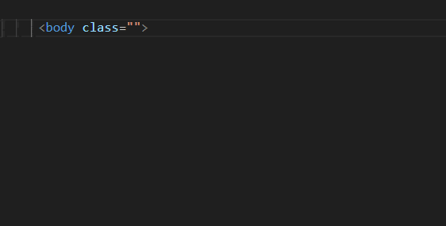
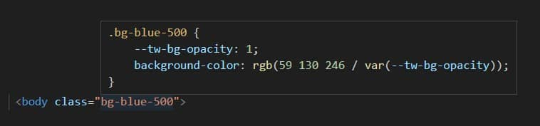

Before we move on to other topics related to Tailwind, I would like us to take a look at one extremely useful tool.
I mean Tailwind CSS IntelliSense, which is an extension to the Visual Studio Code editor.
To be honest, it's hard for me to imagine working with Tailwind without this plugin now, and that's why I want you to install it too and learn how to use it.
Note: To use this extension, of course, you need the Visual Studio Code editor itself.
It's free and you can download it here.
What exactly is Tailwind CSS IntelliSense?
"Tailwind CSS IntelliSense enhances the Tailwind development experience by providing Visual Studio Code users with advanced features such as autocomplete, syntax highlighting, and linting."
Installation is very simple. Go to the Tailwind CSS IntelliSense page by clicking the button below:
Tailwind CSS IntelliSenseThen click the green "Install" button.
The browser should ask you for permission to run Visual Studio Code. After agreeing, the installation should start automatically in the editor.
After the installation is complete, you can restart VSCode to make sure the extension will work properly.
As you start typing the class name, a list of hints will appear.
Look at the gif below - when you start typing the bg-blue class, a list of available colors appears. What's more, we even have these colors represented in these little squares in the list.
Isn't that super useful? 🤩
Not sure what exactly a Tailwind class does? Nothing easier - just hover over it and the IntelliSense plugin will display the exact CSS code that this class uses.
The IntelliSense plugin will also show you code errors.
Look at the gif below - when I added the .bg-red-200 class next
to the .bg-blue-500 class, both classes were underlined to
alert us that something was wrong.
When hovering over them, we see that IntelliSense warns us about a conflict
- both classes modify the same CSS property: background-color.
So only one of them will work, so it's obviously a mistake.
Alright, armed with this new tool, we are ready for the next challenges ⚔